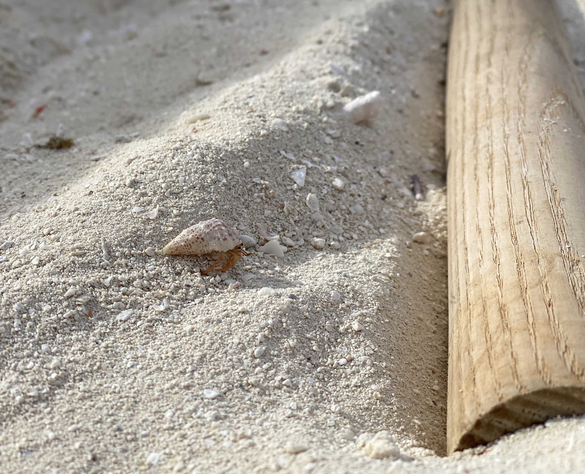

Why is this a tough question, you might ask? Well, I'm a dog person. Usually my default answer for this is "Dog!" or "Puppies!" Or something in that vein. However, I felt like going outside of the box today.
Today, my favorite animal is this specific hermit crab I found on the beach:
Impossibly small, I almost didn't notice him and could have stepped on him. Very cute and very fast, he made a lasting impression on me, and I took unecessary amounts of pictures (like this one) and videos with my phone, NatGeo style.
Thank you for coming to my TED talk.